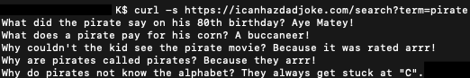
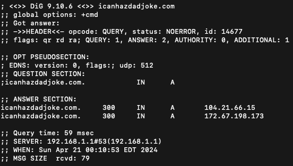
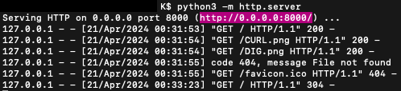
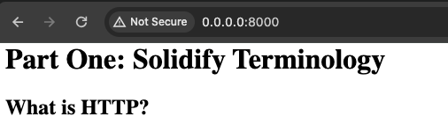
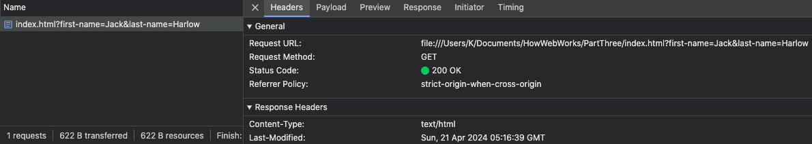
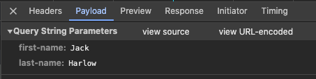
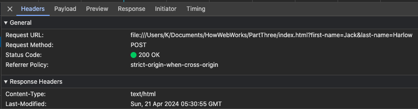
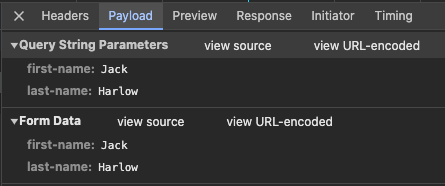

Part One: Solidify Terminology
What is HTTP?
HTTP is Hypertext Transfer Protocol. This is how browsers and servers communicate.
What is a URL?
URL is Universal Resource Locators. This is a unique identifier that is used to locate a specific resource on the Internet.
What is DNS?
DNS is Domain Name Service. This translates the hostname/ domain name into an IP address.
What is a query string?
Query string is apart of the URL usually at the end that provides “extra information”. This is generated from form submission or by a user typing a query into the address bar of the browser.
The query string starts at the question mark (?) and the key and values are separated by an ampersand (&) and within each key and value, they are connected by an equal sign (=).
What are two HTTP verbs and how are they different?
The two HTTP verbs are GET and POST. For GET the requests are without side effects, so it requests data from the specified resource while, for POST, the requests are with side effects, so it sends data to a server to create/update a resource.
What is an HTTP request?
A HTTP request is a message sent from the client (browser) to a server requesting a resource which is formatted in the HTTP protocol.
What is an HTTP response?
An HTTP response is made by the server to the client. It is to provide the client with the resource it requested or inform the client that the action it requested was executed or to notify the client that an error occurred in processing the request.
What is an HTTP header? Give a couple examples of request and response headers you have seen.
An HTTP header allows the client and the server to pass additional information with a HTTP request and response.
Examples of Request headers are Cookie, Authorization, Referer, Accept, Host, User-Agent.
Examples of Response headers are Age, Content-Type, Cache-Control, Content-Length, Expires, Set-Cookie.
What are the processes that happen when you type “http://somesite.com/some/page.html” into a browser?
- The first step is the DNS resolution. The browser would translate the human-readable domain name,"somesite.com" into an IP address that the server can understand.
- Once the browser obtains the IP address of the server hosting "somesite.com", it then initiates a Transmission Control Protocol (TCP) connection to the server.(Uses the resolved IP address and port number 80 or 443 for HTTPS).
- After the TCP connection has been established, the browser sends an HTTP request to the server for the resource "/some/page.html” on the "somesite.com" hostname/ domain name. This is where the request methods, headers comes in.
- When the server receives the HTTP request from the browser and processes it accordingly, it then locates the requested resource "/some/page.html" within its file system or database and prepares to send it back to the browser in an HTTP response.
- Once the server locates the requested resource, it builds an HTTP response (includes status codes, headers and cookies) which contains the HTML content of "page.html”.
- Once the HTTP response from the server has been received, the browser renders the web page by interpreting and displaying the HTML contents along with CSS and JavaScript. The user can interact with and view the content of “http://somesite.com/some/page.html” in the browser.
Part Two: Practice Tools
Using curl, make a GET request to the icanhazdadjoke.com API to find all jokes involving the word “pirate”.
To get all the jokes from Pirate in icanhazdadjoke.com, see image below:

Use dig to find what the IP address is for icanhazdadjoke.com
The IP address for icanhazdadjoke.com is 104.21.66.15

Make a simple web page and serve it using python3 -m http.server. Visit the page in a browser.


To stop the server, it is Ctrl + Z.
Part Three: Explore Dev Tools
Build a very simple HTML form that uses the GET method (it can use the same page URL for the action) when the form is submitted.
Add a field or two to the form and, after submitting it, explore in Chrome Developer tools how you can view the request and response headers.
Edit the page to change the form type to POST, refresh in the browser and re-submit. Do you still see the field in the query string?
Explore in Chrome how you can view the request and response headers, as well as the form data.
GET


POST

